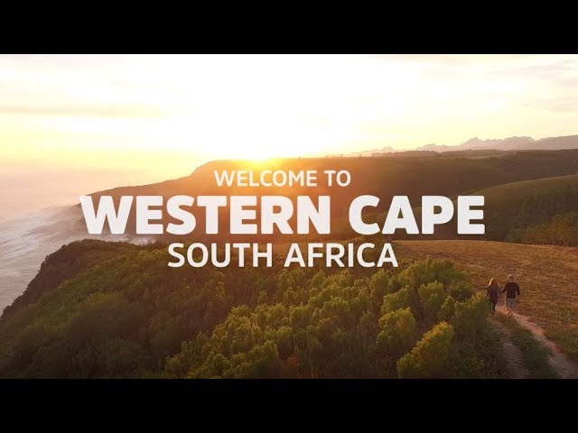

Explore the 9 provinces of South Africa

Things to do in Free State:

Things to do in Gauteng:

Things to do in Limpopo:

Things to do in Mpumalanga:

Things to do in North West:

Things to do in Northern Cape Cape:

